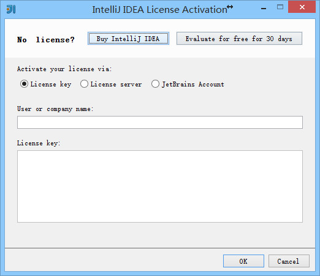
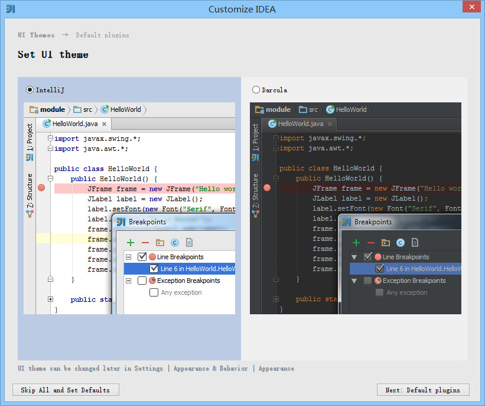
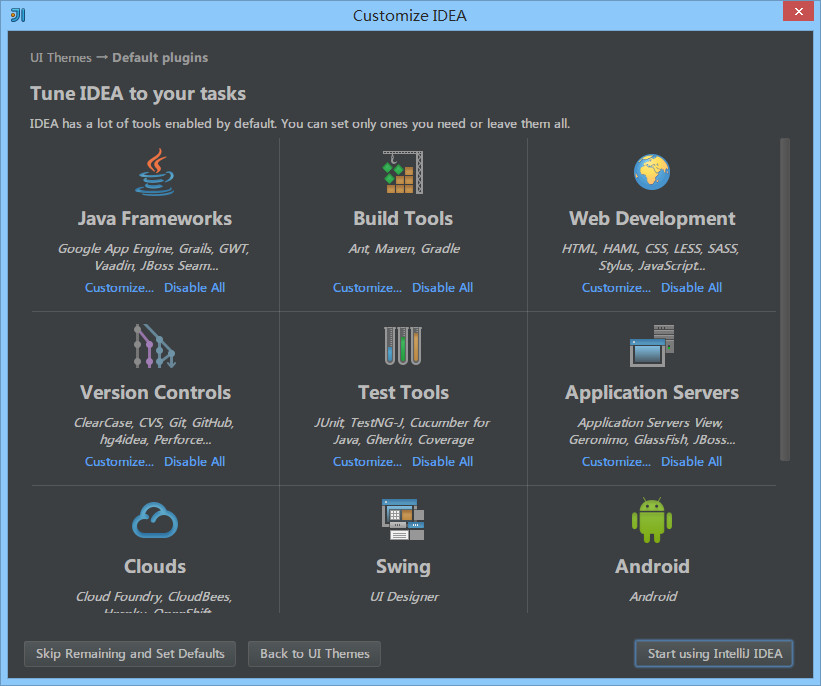
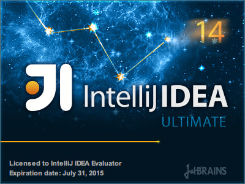

首次运行
向导功能
- 假如你计算机上在过去已经有安装过 IntelliJ IDEA 14 的版本，且你在卸载 IntelliJ IDEA 的过程中，IntelliJ IDEA 的配置文件目录都没有删除，那安装新版本之后是不会有首次运行的功能向导的。
- 假如你计算机上没有安装过 IntelliJ IDEA，或是 卸载 IntelliJ IDEA 过程中你删除了 IntelliJ IDEA 的配置文件目录，则当你双击运行桌面上的 IntelliJ IDEA 快捷图标，将进入下面介绍的向导过程。

- 上图第一个单选按钮表示 IntelliJ IDEA 识别到我计算机上有 IntelliJ IDEA 13 版本的旧配置，如果我选择了该选项，则 IntelliJ IDEA 将自动把旧版本的配置文件转移到新版本的配置文件目录上。如果你计算机上首次安装一般是没有该选项的。
- 上图第二个单选按钮表示你可以指定 IntelliJ IDEA 导入你计算机上存在其他目录的 IntelliJ IDEA 配置文件目录，如果你有的话。
- 上图第三个单选按钮表示你没有任何早期版本的 IntelliJ IDEA 配置，你不导入任何配置，让 IntelliJ IDEA 生成一份新的配置。

- 上图默认选择中的是
Buy IntelliJ IDEA，验证 IntelliJ IDEA 的许可有如图三种方式，我们这里使用的是 30 天试用版本进行演示，顾单击 Evaluate for free for 30 days 进行下一步。


- 上图选择的时候 IntelliJ IDEA 主题 UI，在 Windows 系统版本中 IntelliJ IDEA 自带了 4 个主题，但是用的最多的就是上图这 2 种，其中大家基本偏爱黑色的
Darcula。这个没有好坏之分，根据你的喜好来进行选择，我们演示的版本就是用 Darcula。

- 上图显示了 IntelliJ IDEA 支持的主要的一些扩展功能或者说是工具、插件也可以。你可以根据自己开发的需求进行禁用一些扩展，这样可以稍微减轻 IntelliJ IDEA 运行时所占内存，加快运行速度，但是效果并不会很明显就是。
- 我们这里点击
Java Frameworks 的 Customize 进行下一步操作。

- 上图显示了 IntelliJ IDEA 所以支持的
Java Frameworks。我们可以根据自己的开发需求不启用指定框架的。去掉框架前面的勾选框就表示不启用该框架功能支持。
- 对于不启用的框架，我们也可以在后期进行重新勾选，这会在 IntelliJ IDEA 插件那一讲进行专门讲解。

- 选择好自己所需的扩展功能后，按
Start using IntelliJ IDEA 显示上图启动界面，金黄色进度条走完之后，欢迎真正进入 IntelliJ IDEA 的编码世界！